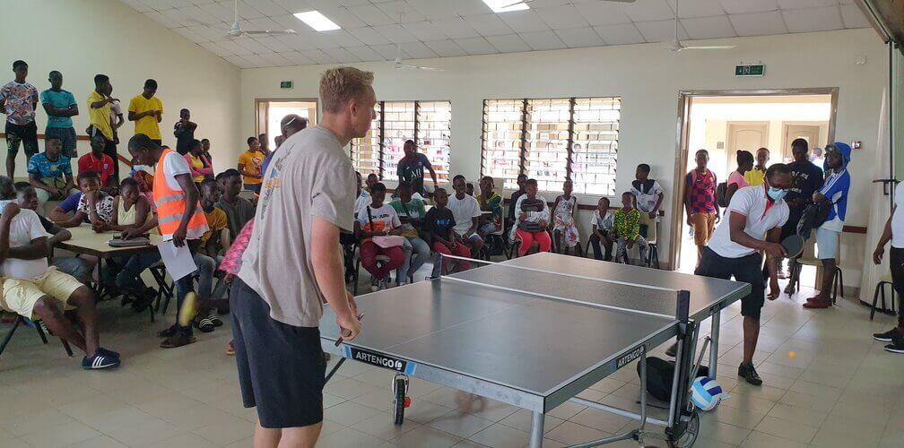

This site focuses on the YSA (Young Single Adults) of Kpong Ghana District and talks about their Gathering place program and all the fun trips organized by the leadership. Staying up to date with this site brings you all the current affairs in the district which are YSA related. You will also receive updates on all past and upcoming events organized by the YSA.
